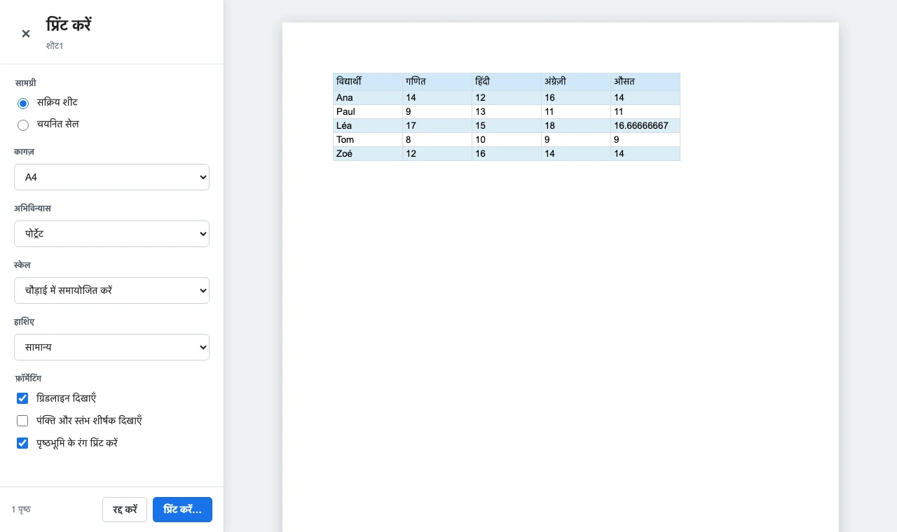

प्रिंट
फ़ाइल › प्रिंट करें… या Ctrl P पृष्ठों को वैसे ही दिखाता है जैसे वे छपेंगे।

| सेटिंग | विकल्प |
|---|---|
| सामग्री | सक्रिय शीट, या विंडो खोलने से पहले चुने सेल |
| कागज़ | A4, Letter |
| अभिविन्यास | खड़ा, आड़ा |
| स्केल | वास्तविक आकार; चौड़ाई में समायोजित करें: सभी कॉलम एक पृष्ठ की चौड़ाई में; एक पृष्ठ में समायोजित करें |
| हाशिए | सामान्य, सँकरे, चौड़े |
| फ़ॉर्मेटिंग | ग्रिडलाइन, पंक्ति और कॉलम शीर्षक, पृष्ठभूमि रंग |
प्रिंट करें… ब्राउज़र की विंडो खोलता है, जहाँ प्रिंटर या PDF में सहेजना चुना जाता है।
- केवल सेल, फ़ॉर्मेटिंग सहित, छपते हैं: चार्ट, चित्र और स्पार्कलाइन नहीं।
- छिपी पंक्तियाँ और कॉलम नहीं छपते।
- चेकबॉक्स TRUE या FALSE छपता है।
- एक बार में एक शीट छपती है।
चार्ट सहित छापने के लिए वर्कबुक सहेजें और Excel या LibreOffice में खोलें।